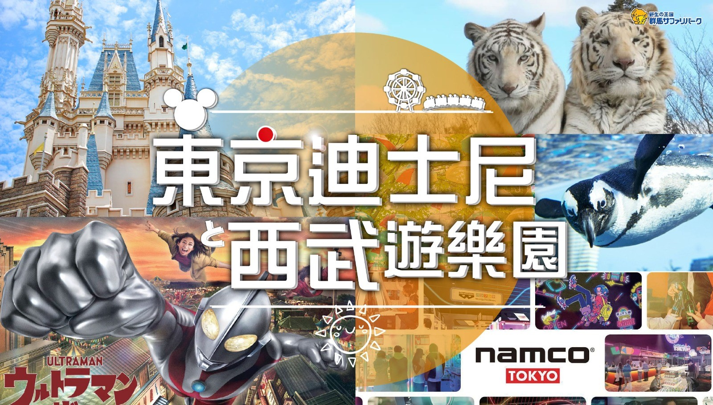
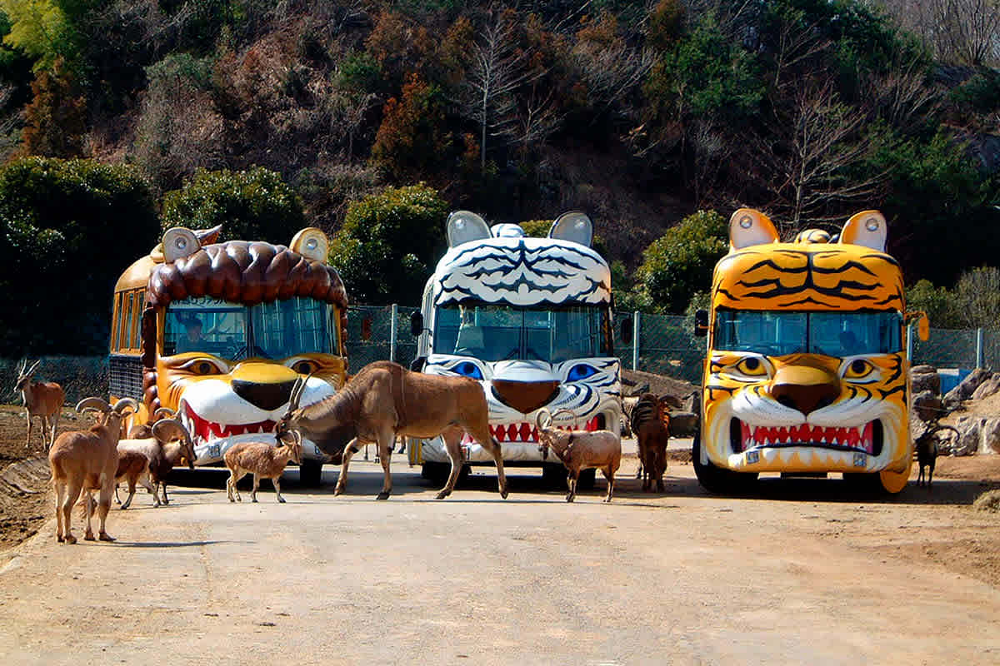
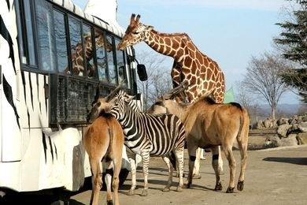
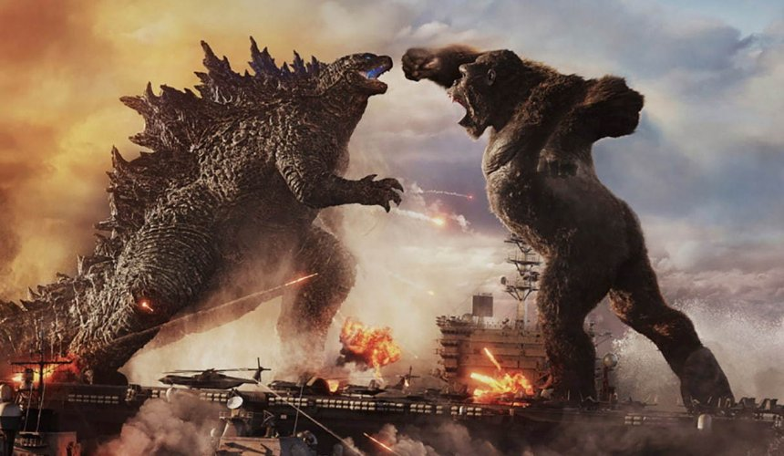
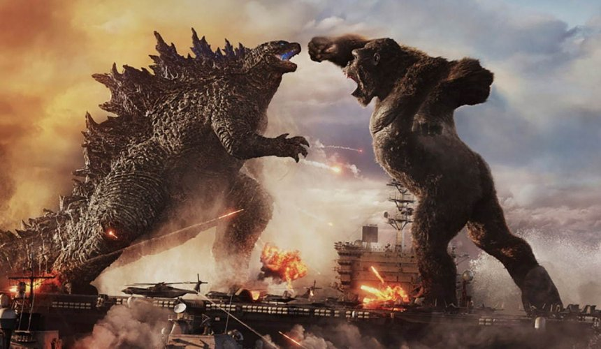
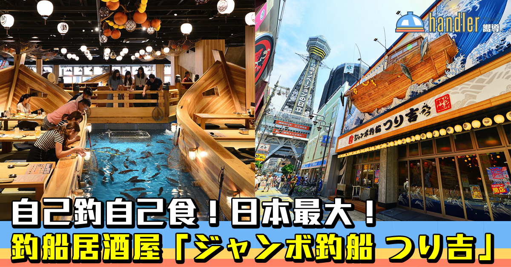
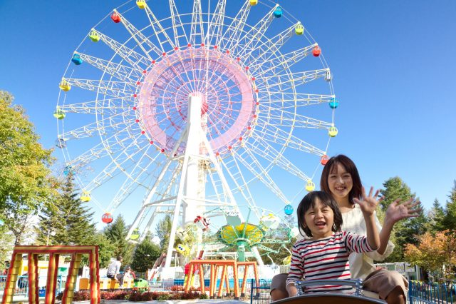
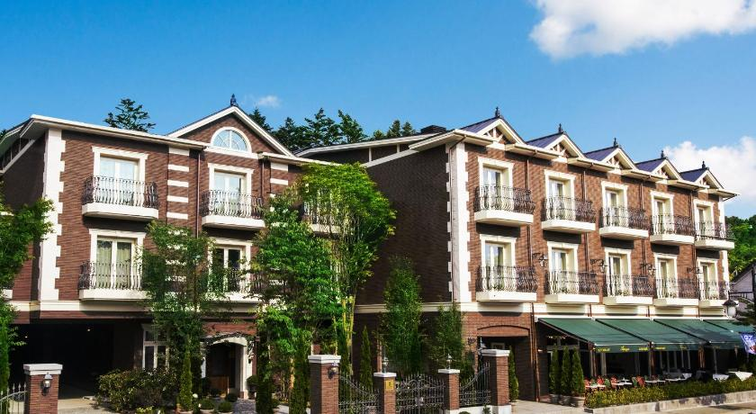
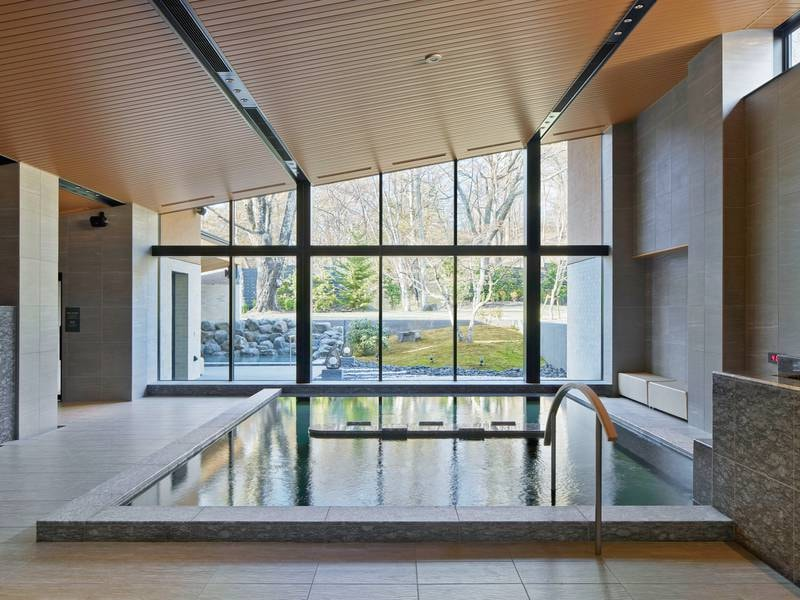
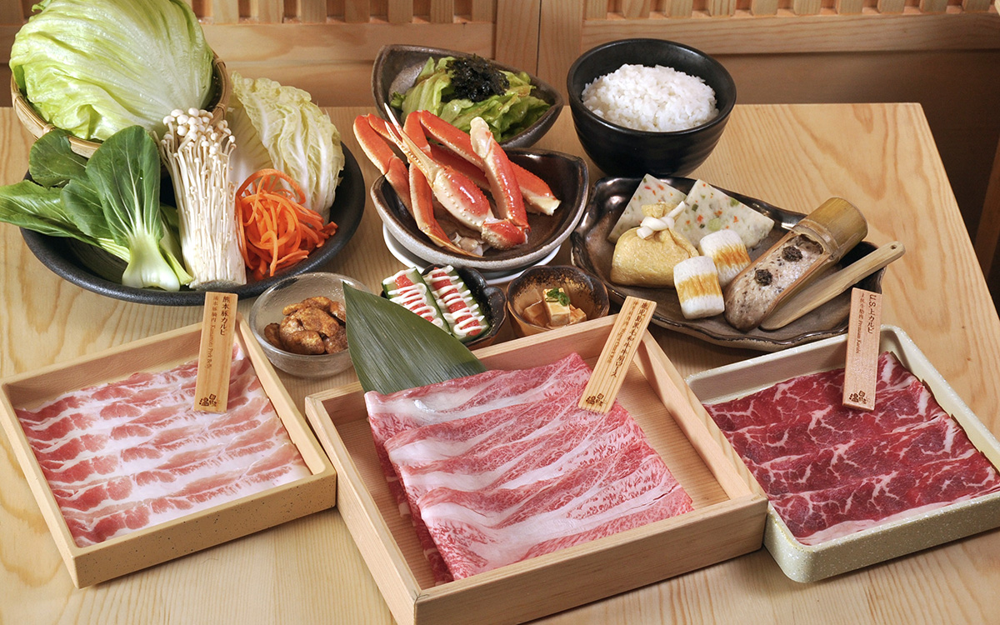

[6天] [東京親子] 東京迪士尼樂園/海洋 ．西武SEIBU 遊樂園．群馬野生動物 SAFARI．企鵝空中飛「陽光水族館」．即釣即食「釣船茶屋」．輕井澤玩具王國． 歌舞伎町TOWER 新宿 GROOVE酒店．2晚輕井澤LEGRAND 溫泉
✈️早鳥優惠碼JP2024⚡️最高減$500．[溫野菜] SHABU SHABU．法式創作料理．太陽城SUNSHINE CITY [BANDAI+Pokémon+ONE PIECE] ．新藝術博物館．輕井澤 OUTLET．新宿繁華區．全程只搬2次．主題樂園．親子活動
| 地區 | 日本 - 東京/輕井澤/伊豆/神奈川 |
|---|---|
| 旅行團編號 | JNG6CH |
| 已成團日期 | 20/09 |
| 稅項+燃油費等 | - |
| 總費用 | HK$ 14,999+ |

旅行團簡介
主題樂園親
- 免費 Fast Pass
- Disney Premier Access 迪士尼尊享卡
群馬野生動物園 SAFARI
乘車近距離欣賞大約 100 種近 1000 隻的野生動物
西武SEIBU 遊樂園
全球首個哥斯拉遊樂設施 2021 重新登場 體驗20多個景點，包含表演和活動 · 主要以過山車、摩天輪、旋轉木馬、海盜船等
企鵝空中飛
陽光水族館 位於太陽城頂樓，達550種共23,000隻生物
太陽城SUNSHINE CITY
BANDAI Store, Pokémon Center, ONE PIECE 草帽商店
輕井澤玩具王國
室內室外園區齊備，室外有大冒險之森
輕井澤新藝術博物館
展示著以草間彌生、奈良美智、多位日本知名藝術家的作品
輕井澤 OUTLET
信州最大型 集結了 240 間以上充滿個性的店舖，由五個區域組成
新宿繁華區
東急歌舞伎町TOWER、TAITO STATION、伊勢丹
DIVERCITY TOKYO PLAZA
150間人氣品牌商店, 1：1 實物高達獨角獸
美食佳餚
- 溫野菜 SHABU SHABU
- 釣船茶屋 海鮮御膳 即釣即食
- 輕井澤 LeGrand 法式創作料理
嚴選宿泊 全程只搬2次
- 2晚 舊輕井澤 LE GRAND 或 輕井澤 PRINCE
- 東急歌舞伎町TOWER 內 新宿GROOVE
- 銀座/赤坂 MONTEREY 或 豐州 JAL CITY
東京迪士尼海洋/樂園
群馬野生動物 SAFARI
 西武SEIBU 遊樂園
 

即釣即食「釣船茶屋」

輕井澤玩具王國
東急歌舞伎町TOWER
舊輕井沢LE GRAND 溫泉
 [溫野菜] SHABU SHABU
資料及圖片僅提供參考
東京歷史和文化:
東京有著悠久的歷史和獨特的文化。作為日本的首都,東京經歷了從武士時代到現代的巨大變遷。 歷史方面,東京最早起源於江戶時代,當時稱為江戶。江戶時代是日本封建社會的鼎盛期,武將家康在此建立了幕府,成為政治中心。1868年明治維新後,江戶易名為東京,成為新的Imperial首都。二戰期間東京曾遭遇重大空襲,但戰後迅速復甦,成為當代最具代表性的現代化大都市。 文化方面,東京是日本流行文化的發源地,擁有眾多獨特的傳統藝術形式,如歌舞伎、能劇等。同時,東京也是潮流文化的中心,涌現了龐大的漫畫、動漫、J-POP等亞文化。東京也是美食天堂,擁有眾多米其林星級餐廳和獨特的料理風格。